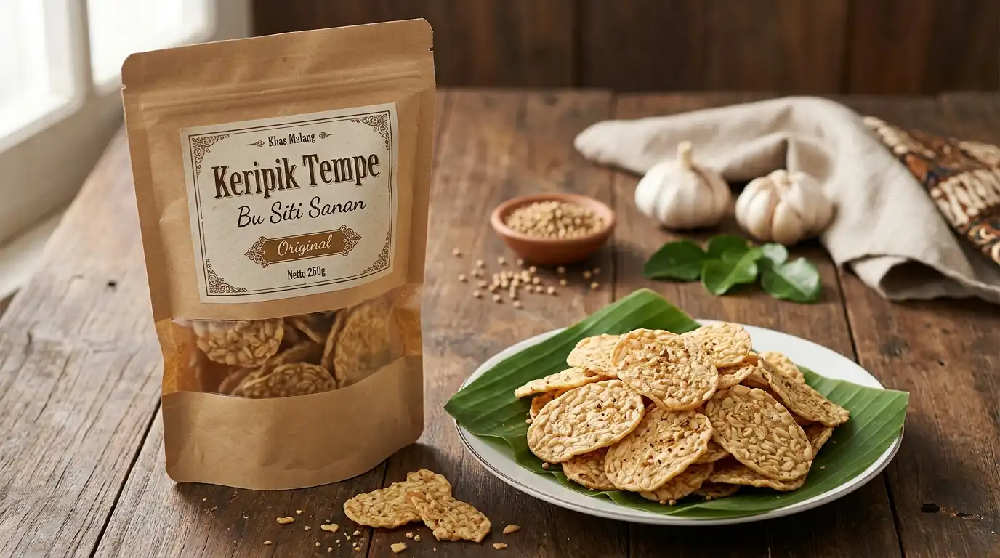
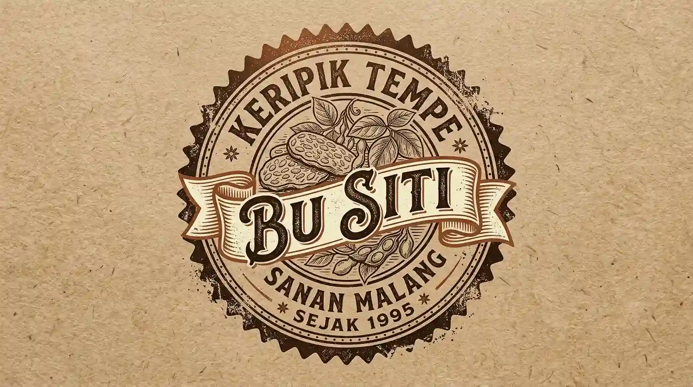
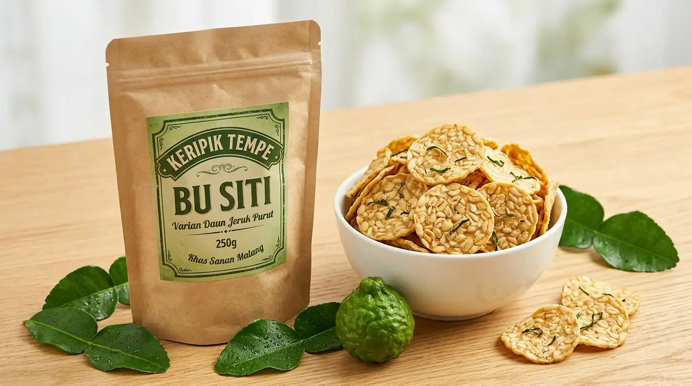
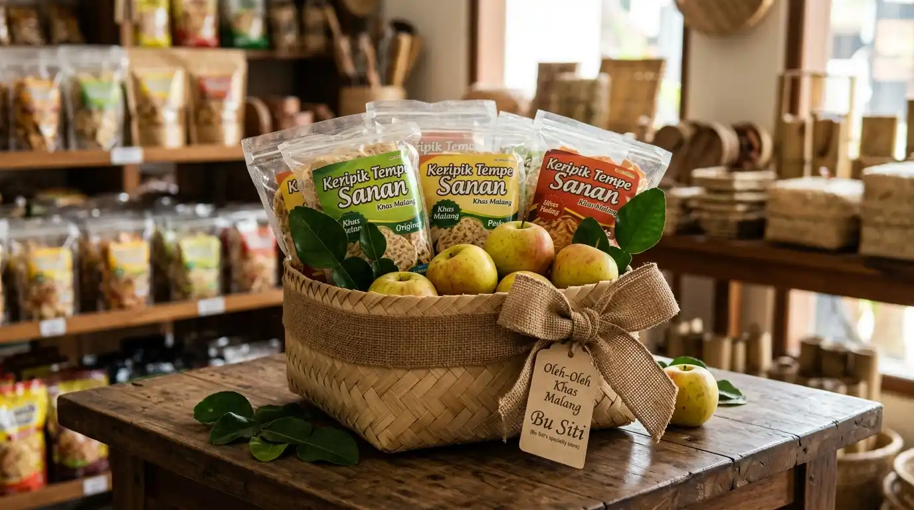

✔ TerverifikasiLowokwaruTutup
Keripik Tempe Bu Siti
📍 Sanan, Purwantoro, Blimbing, Kota Malang
⏰ Jam Operasional: Setiap hari, 07.00 – 18.00 WIB
Keripik tempe renyah gurih dari kedelai pilihan di sentra Sanan, digoreng tipis renyah dengan rempah alami tanpa pengawet. Aman dan tahan lama dikirim ke seluruh nusantara.
Sertifikasi:
P-IRT Resmi
NIB Terdaftar
Tanya Pemilik Toko via WhatsApp
📍 Sentra Oleh-oleh Sanan
Etalase Menu & Produk


Jam Operasional & Lokasi Toko
⏰ Jam Operasional
Buka: Setiap hari, 07.00 – 18.00 WIB
Melayani transaksi langsung di lokasi, pemesanan pesan-antar, dan konsultasi via WhatsApp.
📍 Alamat & Rute
Sanan, Purwantoro, Blimbing, Kota Malang
Petunjuk Arah Google Maps ↗
💳 Pembayaran & Fasilitas
Menerima Tunai, Transfer Bank, dan QRIS.
Kemasan aman dan terstandarisasi untuk dibawa pulang atau dikirim.
Masih Mau Cari Kuliner atau Produk Serupa di Wilayah Ini?
Jelajahi puluhan UMKM sejenis lainnya yang berada di kecamatan yang sama.